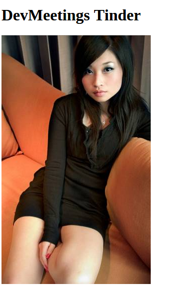

1.1 Korzystając z JS wyświetl pojedyncze zdjęcie
Adres zdjęcia pobierz z lorempixel.
Możesz użyć https://xplatform.org/ext/lorempixel/{width}/{height}/{category}

1.2 Stwórz klasę, która będzie wyświetlać zdjęcia extra
Potraktuj tę klasę jako widok. Na tym etapie URL zdjęcia może być zapisany na stałe w kodzie klasy.